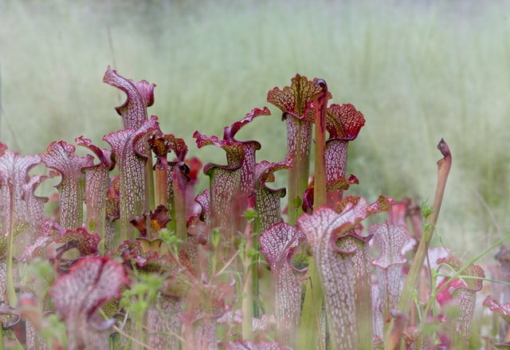
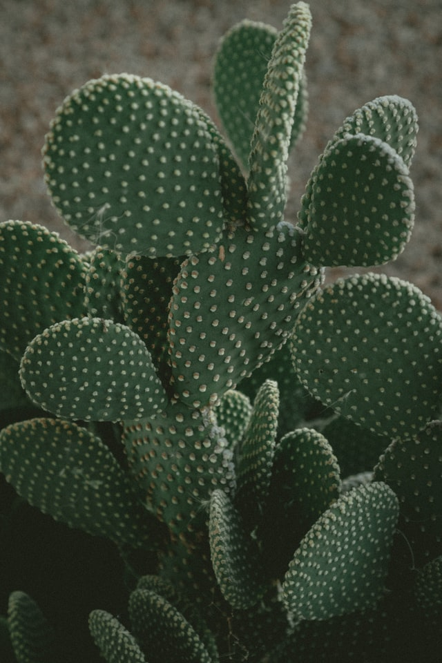
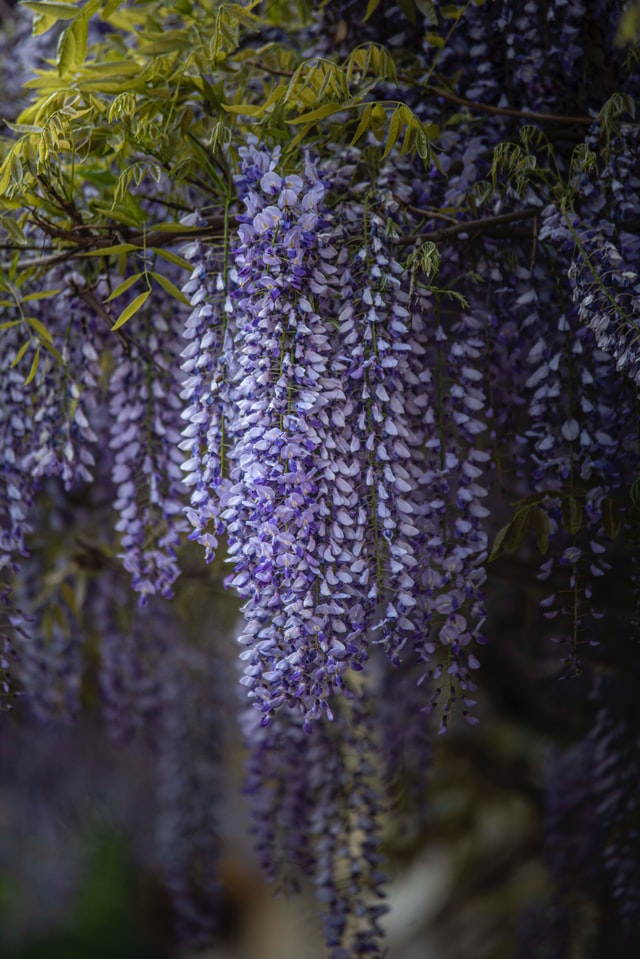
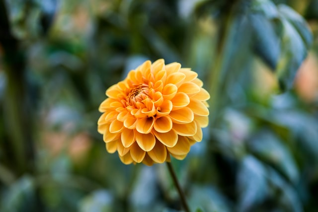
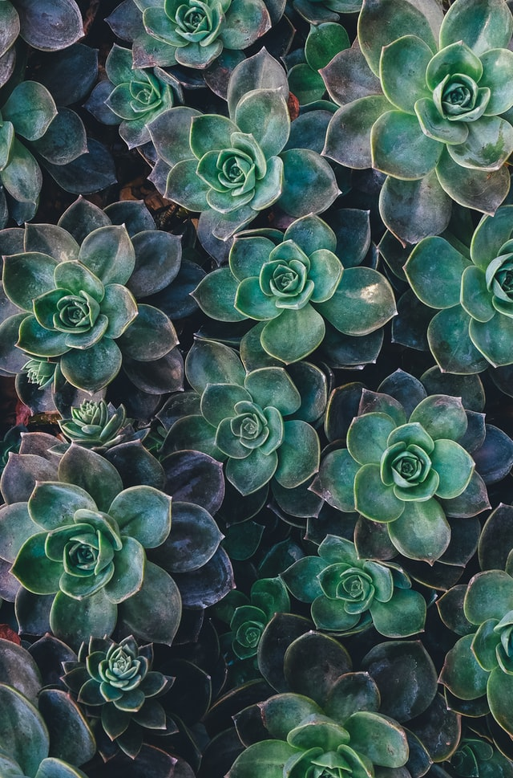
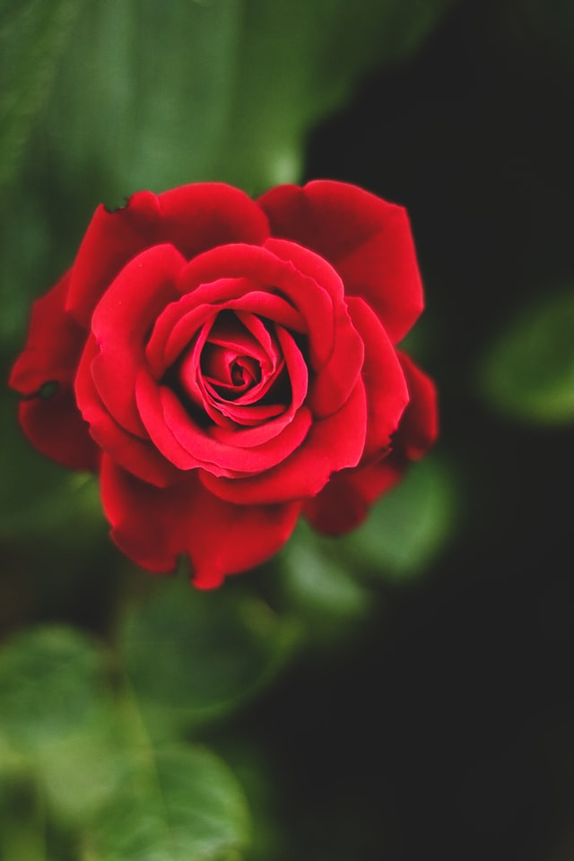

Plants
Living organisms of the kind exemplified by trees, shrubs, herbs, grasses, ferns, and mosses, typically growing in a permanent site, absorbing water and inorganic substances through its roots, and synthesizing nutrients in its leaves by photosynthesis using the green pigment chlorophyll.
Plant Facts:
- Ginkgo (Ginkgo biloba) is one of the oldest living tree species, it dates back to about 250 million years ago!
- The word pineapple comes from European explorers who thought the fruit combined the look of a pinecone with flesh like that of an apple!
- The Elephant grass found in Africa is named so as it is 4.5 meters high and even elephants can hide in it!
- Eating lots of onions will make you sleepy, as it acts as a sedative!
- Cucumber is a fruit and not a vegetable since it has seeds in the center
- A cluster of bananas is called a hand and consists of 10 to 20 bananas known as fingers!
- Vanilla flavoring comes from the pod of an orchid, Vanilla planifolia!
- The first certified botanical garden was founded by Pople Nicholas III in the Vatican City in 1278 AD!
- There are over 300,000 identified plant species and the list is growing all the time!
- Oak trees are struck by lightning more than any other tree!
- Carrots were originally purple in color





